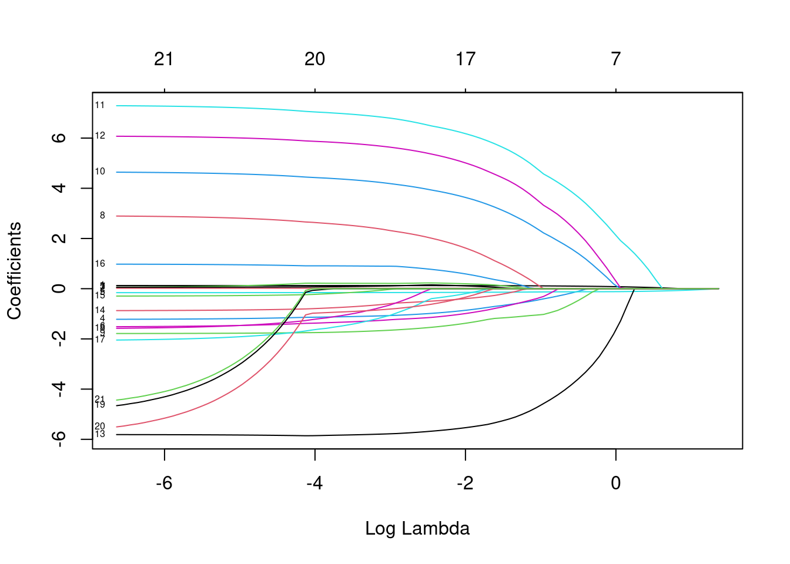
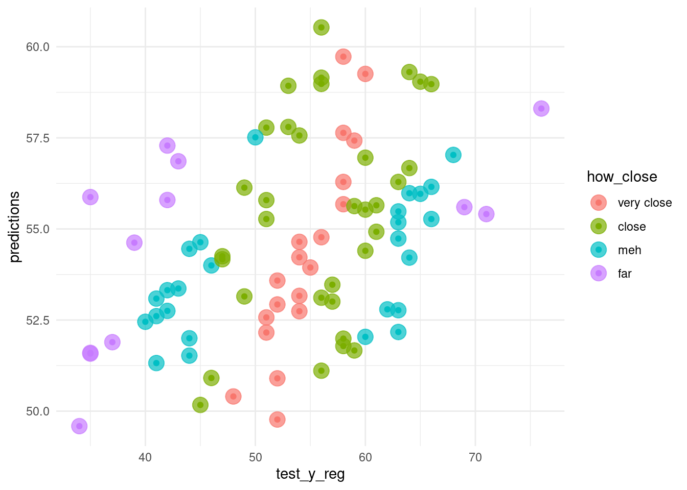

Chapter 6 Random Forests
6.1 Load packages
##
## Attaching package: 'vip'## The following object is masked from 'package:utils':
##
## vi## ── Attaching packages ────────────────────## ✓ ggplot2 3.3.2 ✓ purrr 0.3.4
## ✓ tibble 3.0.3 ✓ dplyr 1.0.2
## ✓ tidyr 1.1.2 ✓ stringr 1.4.0
## ✓ readr 1.3.1 ✓ forcats 0.5.0## ── Conflicts ──── tidyverse_conflicts() ──
## x dplyr::filter() masks stats::filter()
## x dplyr::lag() masks stats::lag()## ── Attaching packages ────────────────────## ✓ broom 0.7.0 ✓ recipes 0.1.13
## ✓ dials 0.0.9 ✓ rsample 0.0.7
## ✓ infer 0.5.3 ✓ tune 0.1.1
## ✓ modeldata 0.0.2 ✓ workflows 0.2.0
## ✓ parsnip 0.1.3 ✓ yardstick 0.0.7## ── Conflicts ─── tidymodels_conflicts() ──
## x scales::discard() masks purrr::discard()
## x dplyr::filter() masks stats::filter()
## x recipes::fixed() masks stringr::fixed()
## x dplyr::lag() masks stats::lag()
## x yardstick::spec() masks readr::spec()
## x recipes::step() masks stats::step()## here() starts at /home/jae/Machine-Learning-in-R##
## Attaching package: 'glue'## The following object is masked from 'package:dplyr':
##
## collapse## Loading required package: foreach##
## Attaching package: 'foreach'## The following objects are masked from 'package:purrr':
##
## accumulate, when## Loading required package: iterators## Loading required package: parallel6.2 Load data
Load train_x_class, train_y_class, test_x_class, and test_y_class variables we defined in 02-preprocessing.Rmd for this classification task.
6.3 Overview
The random forest algorithm seeks to improve on the performance of a single decision tree by taking the average of many trees. Thus, a random forest can be viewed as an ensemble method, or model averaging approach. The algorithm was invented by UC Berkeley’s own Leo Breiman in 2001, who was also a co-creator of decision trees (see his 1984 CART book).
Random forests are an extension of bagging, in which multiple samples of the original data are drawn with replacement (aka “bootstrap samples”). An algorithm is fit separately to each sample, then the average of those estimates is used for prediction. While bagging can be used by any algorithm, random forest uses decision trees as its base learner. Random forests add another level of randomness by also randomly sampling the features (or covariates) at each split in each decision tree. This makes the decision trees use different covariates and therefore be more unique. As a result, the average of these trees tends to be more accurate overall.
6.4 Non-tidy
6.4.1 Fit model
Fit a random forest model that predicts the number of people with heart disease using the other variables as our X predictors. If our Y variable is a factor, ranger will by default perform classification; if it is numeric/integer regression will be performed and if it is omitted it will run an unsupervised analysis.
set.seed(1234)
(rf1 <- ranger::ranger(train_y_class ~ .,
data = train_x_class,
# Number of trees
num.trees = 500,
# Number of variables randomly sampled as candidates at each split.
mtry = 5,
# Grow a probability forest?
probability = TRUE,
# We want the importance of predictors to be assessed.
importance = "permutation"))## Ranger result
##
## Call:
## ranger::ranger(train_y_class ~ ., data = train_x_class, num.trees = 500, mtry = 5, probability = TRUE, importance = "permutation")
##
## Type: Probability estimation
## Number of trees: 500
## Sample size: 213
## Number of independent variables: 21
## Mtry: 5
## Target node size: 10
## Variable importance mode: permutation
## Splitrule: gini
## OOB prediction error (Brier s.): 0.148256The “OOB estimate of error rate” shows us how accurate our model is. \(accuracy = 1 - error rate\). OOB stands for “out of bag” - and bag is short for “bootstrap aggregation”. So OOB estimates performance by comparing the predicted outcome value to the actual value across all trees using only the observations that were not part of the training data for that tree.
We can examine the relative variable importance in table and graph form. Random Forest estimates variable importance by separately examining each variable and estimating how much the model’s accuracy drops when that variable’s values are randomly shuffled (permuted). The shuffling temporarily removes any relationship between that covariate’s value and the outcome. If a variable is important then the model’s accuracy will suffer a large drop when it is randomly shuffled. But if the model’s accuracy doesn’t change it means the variable is not important to the model - e.g. maybe it was never even chosen as a split in any of the decision trees.
6.4.2 Investigate

## # A tibble: 21 x 2
## Variable Importance
## <chr> <dbl>
## 1 thal_X2 0.0364
## 2 thal_X3 0.0258
## 3 thalach 0.0155
## 4 oldpeak 0.0150
## 5 exang 0.0146
## 6 sex_X1 0.0107
## 7 ca_X1 0.00977
## 8 ca_X2 0.00479
## 9 slope_X2 0.00436
## 10 cp_X2 0.00323
## # … with 11 more rows6.5 Tidy models
6.5.1 parsnip
- Build a model
- Specify a model
- Specify an engine
- Specify a mode
# workflow
rand_wf <- workflow() %>% add_formula(target~.)
# spec
rand_spec <- rand_forest(
# Mode
mode = "classification",
# Tuning parameters
mtry = NULL, # The number of predictors to available for splitting at each node
min_n = NULL, # The minimum number of data points needed to keep splitting nodes
trees = 500) %>% # The number of trees
set_engine("ranger",
# We want the importance of predictors to be assessed.
importance = "permutation")
rand_wf <- rand_wf %>% add_model(rand_spec)- Fit a model
6.5.2 yardstick
- Let’s formally test prediction performance.
Metrics
accuracy: The proportion of the data predicted correctlyprecision: Positive predictive valuerecall(specificity): True positive rate (e.g., healthy people really healthy)

From wikipedia
- To learn more about other metrics, check out the yardstick package references.
# Define performance metrics
metrics <- yardstick::metric_set(accuracy, precision, recall)
# Build an evaluation function
evaluate_class <- function(model){
# Bind ground truth and predicted values
bind_cols(tibble(truth = test_y_class), # Ground truth
predict(model, test_x_class)) %>% # Predicted values
# Calculate root mean-squared error
metrics(truth = truth, estimate = .pred_class)
}visualize_metrics <- function(model){
evaluate_class(model) %>%
ggplot(aes(x = fct_reorder(glue("{toupper(.metric)}"), .estimate), y = .estimate)) +
geom_col() +
labs(x = "Metrics",
y = "Estimate")}
rand_fit_viz_metr <- visualize_metrics(rand_fit)
rand_fit_viz_metr - Visualize the confusion matrix.
- Visualize the confusion matrix.
- The following visualization code draws on Diego Usai’s medium post.
visualize_conf_mat <- function(model){
bind_cols(tibble(truth = test_y_class), # Ground truth
predict(model, test_x_class)) %>%
conf_mat(truth, .pred_class) %>%
pluck(1) %>% # Select index
as_tibble() %>% # Vector -> data.frame
ggplot(aes(Prediction, Truth, alpha = n)) +
geom_tile(show.legend = FALSE) +
geom_text(aes(label = n),
color = "red",
alpha = 1,
size = 13)
}
rand_fit_viz_mat <- visualize_conf_mat(rand_fit)
rand_fit_viz_mat
6.5.3 tune
6.5.3.1 tune ingredients
We focus on the following two parameters:
mtry: The number of predictors to available for splitting at each node.min_n: The minimum number of data points needed to keep splitting nodes.
tune_spec <-
rand_forest(
mode = "classification",
# Tuning parameters
mtry = tune(),
min_n = tune()) %>%
set_engine("ranger",
importance = "permutation")
rand_grid <- grid_regular(mtry(range = c(1, 10)),
min_n(range = c(2, 10)),
levels = 5)
rand_grid %>%
count(min_n)## # A tibble: 5 x 2
## min_n n
## <int> <int>
## 1 2 5
## 2 4 5
## 3 6 5
## 4 8 5
## 5 10 56.5.3.2 Add these elements to a workflow
6.5.3.3 Visualize
- The following plot draws on the vignette of the tidymodels package.
rand_res %>%
collect_metrics() %>%
mutate(min_n = factor(min_n)) %>%
ggplot(aes(mtry, mean, color = min_n)) +
# Line + Point plot
geom_line(size = 1.5, alpha = 0.6) +
geom_point(size = 2) +
# Subplots
facet_wrap(~ .metric,
scales = "free",
nrow = 2) +
# Log scale x
scale_x_log10(labels = scales::label_number()) +
# Discrete color scale
scale_color_viridis_d(option = "plasma", begin = .9, end = 0) +
labs(x = "The number of predictors to be sampled",
col = "The minimum number of data points needed for splitting",
y = NULL) +
theme(legend.position="bottom")
# Optimal parameter
best_tree <- select_best(rand_res, "accuracy")
# Add the parameter to the workflow
finalize_tree <- rand_wf %>%
finalize_workflow(best_tree)rand_fit_tuned <- finalize_tree %>%
fit(train_x_class %>% bind_cols(tibble(target = train_y_class)))
# Metrics
(rand_fit_viz_metr + labs(title = "Non-tuned")) / (visualize_metrics(rand_fit_tuned) + labs(title = "Tuned"))
# Confusion matrix
(rand_fit_viz_mat + labs(title = "Non-tuned")) / (visualize_conf_mat(rand_fit_tuned) + labs(title = "Tuned"))
- Visualize variable importance

TBD: Challenge 3